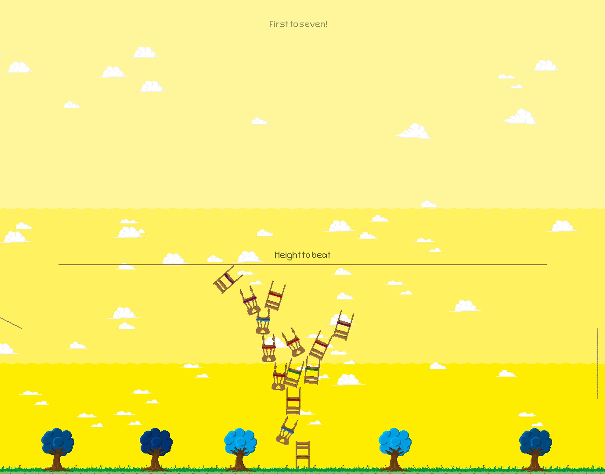
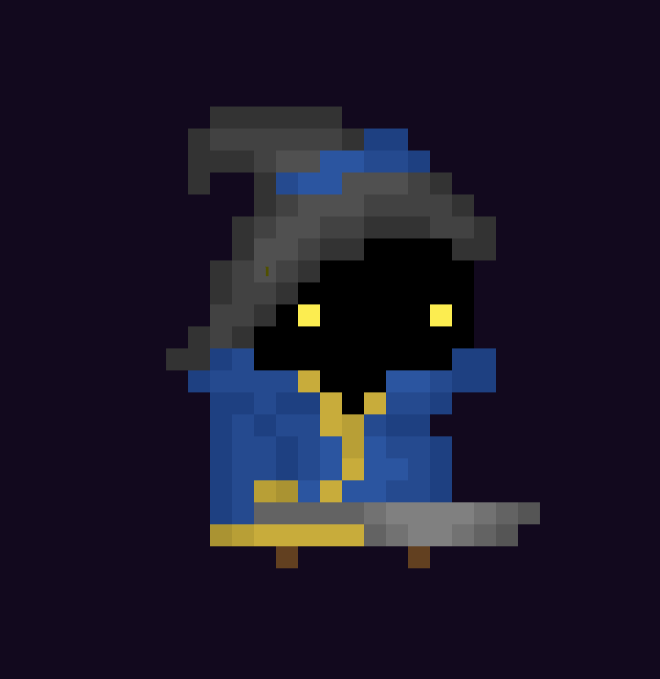
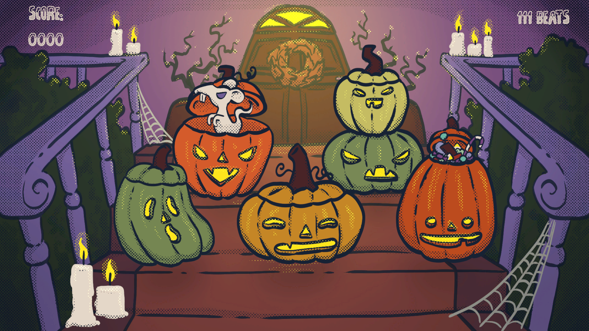
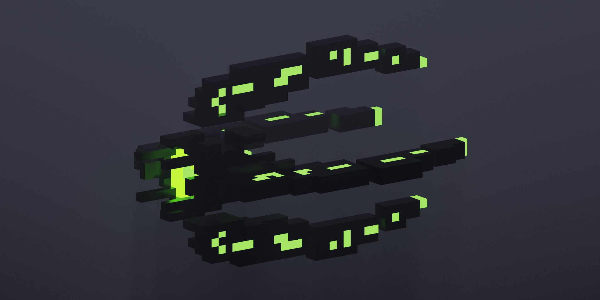

About Me
Hi, I'm Mara Schmid, a passionate game developer with experience in 2D and 3D games, always trying to improve and open for a challenge. Currently I'm studying MMT at the FH Salzburg. This portfolio is for showcasing the projects i contributed to.
Projects

Catnip
A 2D platformer where players play as a cat trying to push as many things as possible off of furniture. Developed using C# and SFML.
Chairy Madness
A two-player local PvP game, where players compete in stacking chairs as high as possible by flinging them at the chair tower. Created using C++ and SFML.
Pan-Tastic Wizard Adventures
A single player platformer, where players are a wizard using a pan to brew spells from different ingredients to cast them at enemies. Built using Unity Engine and C#.

Hildeguard
A tower defense game where players have to protect a relic from enemy units by assigning units to rooms and controlling them. Made with Unity Engine and C#.
PumpKins
A small whack-a-mole like rythm game where players have to save their pumpkins from ghost mice. Created using Unity Engine and C#.
WIP - Space Game
Currently a work in progress, made for my master studies. Will be implemented using Unreal Engine and C++.
Skills
- C#
- C++
- Python
- Unity Engine
- Unreal Engine
- Godot Engine
- Version Control (Git)
Contact
Feel free to reach out to me via:
Email: mara.schmid@gmx.at
LinkedIn: Mara Schmid
GitHub: https://github.com/M4Sch